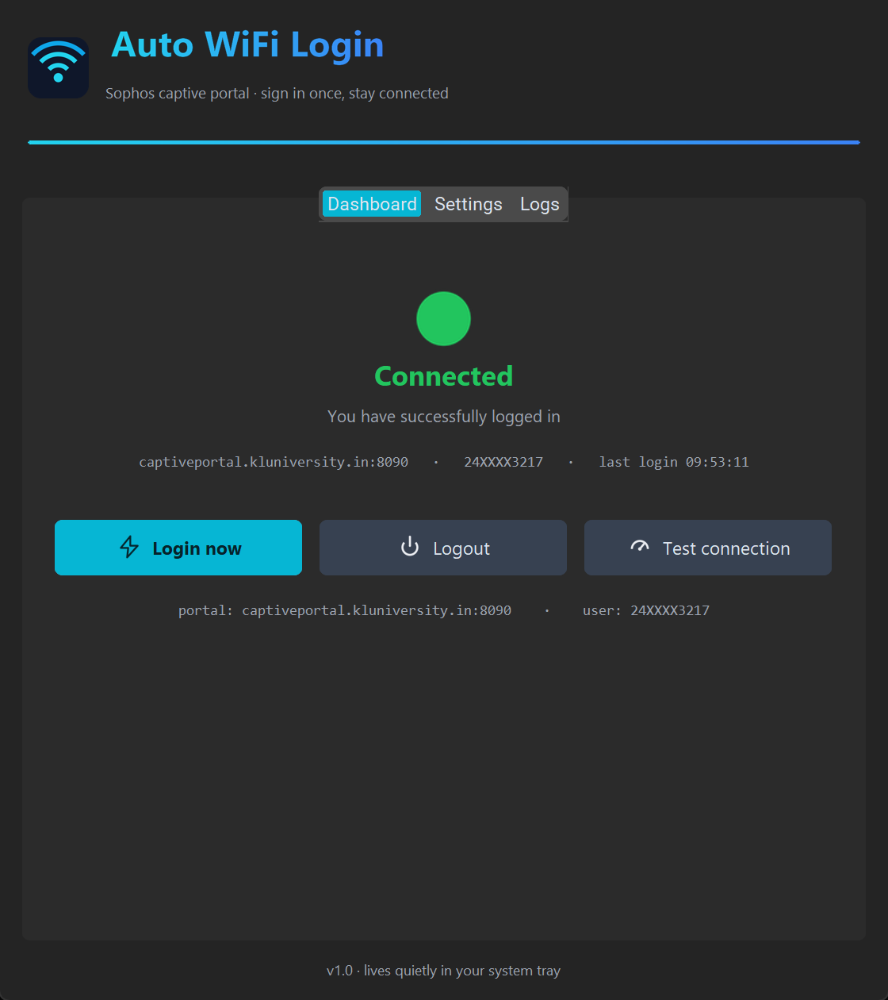
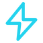
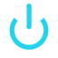
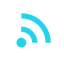
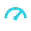
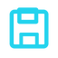
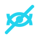

A tiny tray app that signs you into the campus WiFi for you — at boot, after class, every time the portal kicks you off. Set it up once and forget the login page exists.

Free, open, and your credentials never leave your PC — they're stored encrypted with Windows DPAPI, tied to your Windows account.
Built by a KLU student who got tired of the portal page one too many times.

A background monitor notices the moment the portal blocks you and signs you back in within seconds — with smart retry backoff.

Launches silently with Windows, straight into the system tray. No console windows, no interruptions.

Preconfigured for captiveportal.kluniversity.in, and it can sniff out the portal address on other networks too.

Periodic session keep-alives so the portal doesn't idle you out in the middle of something important.

Your password is sealed with Windows DPAPI — only your Windows account can decrypt it. Nothing is sent anywhere but the portal.

No accounts, no analytics, no cloud. It's a local app talking to exactly one server: the university portal.
One-time setup. After this, the login page is history.
Grab the EXE and open it. Windows SmartScreen may flag it (it's unsigned) — click More info → Run anyway.
In the Settings tab, type your university ID and password, keep Launch on Windows startup on, and hit Save.
Every boot: WiFi joins → the app signs you in → you never see the portal page again. Manage it anytime from the tray icon.